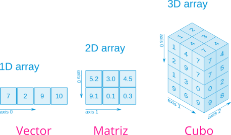

4 Tipos de datos compuestos
4.1 Colecciones de datos
Colecciones de datos con distinta estructura y semántica.
- Arrays
- Vectores
- Matrices
- Tuplas
- Diccionarios
- Conjuntos
4.2 Arrays
Un array es una colección ordenada de datos de un mismo tipo.
El tipo del array se infiere automáticamente a partir de los tipos de sus elementos. Si los elementos son de distintos tipos se convierten al tipo más específico de la jerarquía de tipos del que los tipos de los elementos son subtipos.
Se construyen escribiendo sus elementos separados por comas, puntos y comas o espacios entre corchetes.
julia> [1, 2, 3]
3-element Vector{Int64}:
1
2
3
julia> [1.0, "julia", true]
3-element Vector{Any}:
1.0
"julia"
true4.3 Arrays multidimensionales
Los arrays pueden estructurar sus elementos en múltiples dimensiones. Dependiendo el número de dimensiones tenemos distintos tipos de arrays:

4.3.1 Funciones de arrays
length(A): Devuelve el número de elementos del arrayA.eltype(A): Devuelve el tipo de los elementos del arrayA.ndims(A): Devuelve el número de dimensiones del arrayA.size(A): Devuelve una tupla con los tamaños de las dimensiones del arrayA.size(A, n): Devuelve el tamaño de la dimensiónndel arrayA.axes(A): Devuelve una tupla con los índices válidos de cada dimensión del arrayA.axes(A, n): Devuelve un rango con los índices válidos de la dimensiónndel arrayA.eachindex(A): Devuelve un iterador sobre los índices de los elementos del arrayA.
4.3.2 Constructores de arrays
zeros(dim): Devuelve un array de la dimensiones indicadas por la tupladimcon todos sus elementos ceros.ones(dim): Devuelve un array de la dimensiones indicadas por la tupladimcon todos sus elementos unos.fill(a, dim): Devuelve un array de la dimensiones indicadas por la tupladimcon todos sus elementos igualesa.rand(dim): Devuelve un array de la dimensiones indicadas por la tupladimcon todos sus elementos números aleatorios entre 0 y 1.trues(dim): Devuelve un array de la dimensiones indicadas por la tupladimcon todos sus elementostrue.falses(dim): Devuelve un array de la dimensiones indicadas por la tupladimcon todos sus elementosfalse.
4.3.3 Ejemplos de constructores de arrays
julia> zeros(3) # Vector de tamaño 3
3-element Vector{Float64}:
0.0
0.0
0.0
julia> rand(3,2) # Matriz de tamaño 3 x 2
3×2 Matrix{Float64}:
0.1469 0.891839
0.953462 0.395681
0.819468 0.720606
julia> fill(π, 2, 2)
2×2 Matrix{Irrational{:π}}:
π π
π π4.3.4 Redimensionamiento de arrays
La siguientes funciones permiten cambiar las dimensiones de un array, reestructurando sus elementos:
reshape(A, dim): Devuelve el array que resulta de redimiensionar el arrayAcon las dimensiones indicadas por la tupladim.permutedims(A): Devuelve el array de resulta de trasponer el arrayA.
El array resultante debe tener los mismos elementos que el array original, por lo que si las dimensiones no son compatibles se produce un error.
4.3.5 Ejemplo de redimensionamiento de arrays
julia> v = [1, 2, 3, 4, 5, 6]
6-element Vector{Int64}:
1
2
3
4
5
6
julia> reshape(v, 2, 3)
2×3 Matrix{Int64}:
1 3 5
2 4 6
julia> reshape(v, 3, 2)
3×2 Matrix{Int64}:
1 4
2 5
3 6
julia> permutedims(reshape(v, 3, 2))
2×3 Matrix{Int64}:
1 2 3
4 5 64.3.6 Comprensión de arrays
Una potente técnica de creación de arrays es la comprensión de arrays, que consiste en generar los elementos del array a partir de uno o varios iteradores.
[exp for i = ite]: Devuelve el vector cuyos elementos resultan de evaluar a expresiónexppara cada valoridel iteradorite.[exp for i = ite if cond]: Devuelve el vector cuyos elementos resultan de evaluar a expresiónexppara cada valoridel iteradoriteque cumpla la condicióncond.
Se pueden utilizar varios iteradores para crear arrays de varias dimensiones.
julia> [i^2 for i = 1:4]
4-element Vector{Int64}:
1
4
9
16
julia> [i^2 for i = 1:4 if i % 2 == 0]
2-element Vector{Int64}:
4
16
julia> [i+j for i = 1:2, j = 3:4]
2×2 Matrix{Int64}:
4 5
5 64.4 Vectores
Los vectores son arrays de una dimensión.
Se construyen escribiendo sus elementos separados por comas o puntos y comas entre corchetes.
julia> v = [1, 2, 3]
3-element Vector{Int64}:
1
2
3
julia> length(v)
3
julia> eltype(v)
Int64
julia> ndims(v)
1
julia> size(v)
(3,)
julia> eachindex(v)
Base.OneTo(3)4.4.1 Acceso a los elementos de un vector
El acceso a los elementos de un vector es mediante índices. Cada elemento del vector tiene asociado un índice entero que se corresponde con su posición desde 1 hasta el número de elementos.
v[i]: Devuelve el elemento del vectorvcon índicei.
Si se proporciona un índice no válido se produce un error.
Las palabras reservadas begin y end se utilizan para referirse al primer y último índice de un vector.
4.4.2 Ejemplo de acceso a los elementos de un vector
julia> v = [2, 4, 6]
3-element Vector{Int64}:
2
4
6
julia> v[2]
4
julia> v[end]
6
julia> v[4]
ERROR: BoundsError: attempt to access 3-element Vector{Int64} at index [4]
Stacktrace:
[1] getindex(A::Vector{Int64}, i1::Int64)
@ Base ./array.jl:861
[2] top-level scope
@ REPL[4]:14.4.3 Acceso a múltiples elementos de un vector
Es posible extraer varios elementos de un vector a la vez indicando los índices mediante un rango o un vector de enteros.
v[i:j]: Devuelve un vector con los elementos del vectorvdesde el índiceialj.v[u]: Devuelve un vector con los elementos del vectorvcorrespondientes a los índices del vectoru.
julia> v = [2, 4, 6, 8];
julia> v[2:3]
2-element Vector{Int64}:
4
6
julia> v[[2,4,3]]
3-element Vector{Int64}:
4
8
64.4.4 Modificación de los elementos de un vector
También es posible modificar un vector asignando nuevos elementos mediante los índices.
v[i] = a: Añade el elementoaal vectorven el índicei.
julia> v = [2, 4, 6]
3-element Vector{Int64}:
2
4
6
julia> v[2] = 0
0
julia> v
3-element Vector{Int64}:
2
0
64.4.5 Añadir elementos a un vector
Las siguientes funciones permiten añadir elementos al final de un vector:
push!(v, a): Añade el elementoaal final del vectorv.append!(v, u): Añade los elementos del vectorual final del vectorv.
julia> v = [];
julia> push!(v, 1)
1-element Vector{Any}:
1
julia> append!(v, [2, 3])
3-element Vector{Any}:
1
2
3
julia> v
3-element Vector{Any}:
1
2
34.4.6 Recorrer un vector
Una operación habitual es recorrer los elementos de un vector para hacer cualquier operación con ellos. Existen dos posibilidades: recorrer el vector por índice o por valor.
julia> v = [2, 4, 6];
julia> for i in v # Recorrido por valor
println(i)
end
2
4
6
julia> for i in eachindex(v) # Recorrido por índice
println(v[i])
end
2
4
64.4.7 Operaciones con vectores numéricos
minimum(v): Devuelve el menor elemento del vectorv.maximum(v): Devuelve el mayor elemento del vectorv.argmin(v): Devuelve el índice del menor elemento del vectorv.argmax(v): Devuelve el índice del mayor elemento del vectorv.sum(v): Devuelve la suma de los elementos del vectorv.prod(v): Devuelve el producto de los elementos del vectorv.unique(v): Devuelve un vector con los elementos devsin repetir.
julia> v = [4, 2, 3];
julia> maximum(v)
4
julia> argmax(v)
1
julia> sum(v)
9
julia> prod(v)
244.4.8 Ordenación de vectores
sort(v, rev=true): Devuelve el vector que resulta de ordenar en orden ascendente los elementos del vectorv. Si se pasatrueal parámetrorevel orden es descendente.sort!(v, rev=true): Ordena el vectorven orden ascendente. Si se pasatrueal parámetrorevel orden es descendente.reverse(v): Devuelve el vector con los elementos del vectorven orden inverso.reverse!(v): Modifica el vectorvponiendo sus elementos en orden inverso.
4.4.9 Ejemplo de ordenación de vectores
julia> v = [4, 2, 3];
julia> sort(v)
3-element Vector{Int64}:
2
3
4
julia> reverse(v)
3-element Vector{Int64}:
3
2
4
julia> v
3-element Vector{Int64}:
4
2
3
julia> reverse!(v)
3-element Vector{Int64}:
3
2
4
julia> v
3-element Vector{Int64}:
3
2
44.4.10 Extensión de funciones a vectores
Si una función recibe un parámetro del tipo de los elementos de un vector, se puede aplicar la función a cada uno de los elementos del vector, extendiendo la llamada de la función sobre los elementos del vector. Para ello basta con añadir un punto entre el nombre de la función y el paréntesis de los argumentos.
f.(v): Devuelve el vector que resulta de aplicar la funciónfa cada uno de los elementos del vectorv.
En la llamada a la función hay que pasarle com argumentos tantos vectores como parámetros tenga la función. Si los vectores son de distinto tamaño, se reciclan los de menor tamaño.
Si la función no devuelve ningún valor el resultado es un vector de valores nothing.
La extensión de funciones también funciona con operadores, poniendo el punto delante del operador.
4.4.11 Ejemplo de extensión de funciones a vectores
julia> v = [1, 4, 9];
julia> sqrt.(v)
3-element Vector{Float64}:
1.0
2.0
3.0
julia> v .^ 2
3-element Vector{Int64}:
1
16
81
julia> base = [2, ℯ, 10];
julia> log.(base, v)
3-element Vector{Float64}:
0.0
1.3862943611198906
0.95424250943932494.4.12 Filtrado de vectores
Otra operación bastante común son los filtros de vectores. Se puede filtrar un vector a partir de un vector de booleanos del mismo tamaño.
v[u]: Devuelve el vector con los elementos que tienen el mismo índice que los valorestruedel vector booleanou.
Esto permite aplicar filtros a partir de condiciones que devuelvan un vector de booleanos.
4.4.13 Ejemplo de filtrado de vectores
julia> v = [1, 2, 3, 4];
julia> v[[true, false, true, false]]
2-element Vector{Int64}:
1
3
julia> v .% 2 .== 0 # Condición
4-element BitVector:
0
1
0
1
julia> v[v .% 2 .== 0] # Filtro de números pares
2-element Vector{Int64}:
2
44.4.14 Álgebra lineal con vectores
u+v: Devuelve el vector que resulta de la suma de los vetoresuyv.u-v: Devuelve el vector que resulta de la resta de los vetoresuyv.a * v: De vuelve el vector que resulta de multiplicar el vectorvpor el escalara.v': Devuelve el vector que resulta de trasponer el vectorv. Sives un vector fila,v'es un vector columna y viceversa.
Con el paquete LinearAlgebra también están disponibles las siguientes funciones:
dot(u, v): Devuelve el producto escalar de los vectoresuyv.norm(v): Devuelve la norma (módulo) del vectorv.
4.4.15 Ejemplo de álgebra lineal con vectores
using LinearAlgebra
julia> u = [1, 2, 3]; v = [1, 0, 2];
julia> u + v
3-element Vector{Int64}:
2
2
5
julia> 2u
3-element Vector{Int64}:
2
4
6
julia> dot(u, v) # Producto escalar
7
julia> u'v # Producto escalar
7
julia> norm(v) # Norma o módulo
2.23606797749979
julia> u / norm(u) # Vector unitario
3-element Vector{Float64}:
0.2672612419124244
0.5345224838248488
0.80178372573727324.5 Matrices
Las matrices son arrays de dos dimensiones (filas x columnas).
Se construyen escribiendo sus elementos entre corchetes, separando los elementos por espacio y las filas por punto y coma ;.
julia> A = [1 2 3; 4 5 6]
2×3 Matrix{Int64}:
1 2 3
4 5 6
julia> length(A)
6
julia> eltype(A)
Int64
julia> ndims(A)
2
julia> size(A)
(2, 3)4.5.1 Acceso a los elementos de una matriz
El acceso a los elementos de una matriz es mediante índices. Cada elemento de la matriz tiene asociado un par de índices enteros que se corresponde la fila y la columna que ocupa.
A[i, j]: Devuelve el elemento de la matrizAcon índice de filaie índice de columnaj.
Si se proporciona algún índice no válido se produce un error.
También se puede acceder a los elementos de una matriz mediante un único índice. En ese caso se obtiene el elemento con ese índice en el vector que resulta de concatenar los elementos de la matriz por columnas.
4.5.2 Ejemplo de acceso a los elementos de una matriz
julia> A = reshape(1:6, 2, 3)
2×3 reshape(::UnitRange{Int64}, 2, 3) with eltype Int64:
1 3 5
2 4 6
julia> A[2, 1]
2
julia> A[4]
44.5.3 Acceso a múltiples elementos de una matriz
Es posible extraer varios elementos de una matriz a la vez indicando los índices de las filas y las columnas mediante un rango o un vector de enteros.
A[i:j, k:l]: Devuelve una matriz con los elementos desde el índice de filaialjy el índice de columnakallde la matrizA.A[u, w]: Devuelve una matriz con los elementos correspondientes a los índices de fila del vectoruy los índices de columna del vectorwde la matrizA.
4.6 Ejemplo de acceso a múltiples elementos de una matriz
julia> A = reshape(1:9, 3, :)
3×3 reshape(::UnitRange{Int64}, 3, 3) with eltype Int64:
1 4 7
2 5 8
3 6 9
julia> A[1:2, 2:3]
2×2 Matrix{Int64}:
4 7
5 8
julia> A[[1, 3], [3, 1]]
2×2 Matrix{Int64}:
7 1
9 3
julia> A[2, :] # Segundo vector fila
3-element Vector{Int64}:
2
5
84.6.1 Modificación de los elementos de una matriz
También es posible modificar una matriz asignando nuevos elementos mediante los índices de fila y columna.
A[i, j] = a: Añade el elementoaa la matrizAcon el índice de filaiy el índice de columnaj.
julia> A = zeros(2, 3)
2×3 Matrix{Float64}:
0.0 0.0 0.0
0.0 0.0 0.0
julia> A[2,3] = 1
1
julia> A
2×3 Matrix{Float64}:
0.0 0.0 0.0
0.0 0.0 1.04.6.2 Concatenación de matrices
Dos o más matrices pueden concatenarse horizontal o verticalmente siempre que sus dimensiones sean compatibles.
[A B]: Devuelve la matriz que resulta de concatenar horizontalmente las matricesAyB. Ambas matrices deben tener el mismo número de filas.[A; B]: Devuelve la matriz que resulta de concatenar verticalmente las matricesAyB. Ambas matrices deben tener el mismo número de columnas.
4.6.3 Ejemplo de concatenación de matrices
julia> A = zeros(2, 2)
2×2 Matrix{Float64}:
0.0 0.0
0.0 0.0
julia> B = ones(2, 1)
2×1 Matrix{Float64}:
1.0
1.0
julia> C = ones(1, 3)
1×3 Matrix{Float64}:
1.0 1.0 1.0
julia> D = [A B]
2×3 Matrix{Float64}:
0.0 0.0 1.0
0.0 0.0 1.0
julia> [D ; C]
3×3 Matrix{Float64}:
0.0 0.0 1.0
0.0 0.0 1.0
1.0 1.0 1.04.6.4 Concatenación de vectores
También es posible concatenar varios vectores horizontalmente o verticalmente para formar una matriz.
hcat(v...): Devuelve la matriz que resulta de concatenar horizontalmente los vectores del vectorv.vcat(v...): Devuelve la matriz que resulta de concatenar verticalmente los vectores del vectorv.
4.6.5 Ejemplo de concatenación de vectores
julia> v = [[1, 2, 3], [4, 5, 6]]
2-element Vector{Vector{Int64}}:
[1, 2, 3]
[4, 5, 6]
julia> hcat(v...)
3×2 Matrix{Int64}:
1 4
2 5
3 6
julia> v = [[1 2 3], [4 5 6]]
2-element Vector{Matrix{Int64}}:
[1 2 3]
[4 5 6]
julia> vcat(v...)
2×3 Matrix{Int64}:
1 2 3
4 5 64.6.6 Recorrido de matrices
Una operación habitual es recorrer los elementos de una matriz para hacer una operación con ellos. El recorrido se suele hacer con dos bucles iterativos anidados.
julia> A = [1 2 3; 4 5 6]
2×3 Matrix{Int64}:
1 2 3
4 5 6
julia> for i = 1:size(A, 1), j = 1:size(A, 2) # Recorrido por filas
println(A[i, j])
end
1
2
3
4
5
6
julia> for j = 1:size(A, 2), i = 1:size(A, 1) # Recorrido por columnas
println(A[i, j])
end
1
4
2
5
3
64.6.7 Operaciones con matrices numéricas
minimum(A): Devuelve el menor elemento de la matrizA.maximum(A): Devuelve el mayor elemento de la matrizA.argmin(A): Devuelve los índices de fila y columna del menor elemento de la matrizA.argmax(A): Devuelve los índices de fila y columna del mayor elemento de la matrizA.sum(A): Devuelve la suma de los elementos de la matrizA.prod(A): Devuelve el producto de los elementos de la matrizA.
julia> A = [1 2 3; 4 5 6]
2×3 Matrix{Int64}:
1 2 3
4 5 6
julia> minimum(A)
1
julia> argmax(A)
CartesianIndex(2, 3)
julia> sum(A)
21
julia> prod(A)
7204.6.8 Extensión de funciones a matrices
Al igual que para vectores, se puede aplicar una una función a todos los elementos de una matriz. Para ello basta con añadir un punto entre el nombre de la función y el paréntesis de los argumentos.
f.(A): Devuelve la matriz que resulta de aplicar la funciónfa cada uno de los elementos de la matrizA.
En la llamada a la función hay que pasarle como argumentos tantos vectores como parámetros tenga la función. Si las matrices son de distinto tamaño, se reciclan las de menor tamaño.
La extensión de funciones también funciona con operadores, poniendo el punto delante del operador.
4.6.9 Ejemplo de extensión de funciones a matrices
julia> A = [1 2 3; 4 5 6]
2×3 Matrix{Int64}:
1 2 3
4 5 6
julia> sqrt.(A)
2×3 Matrix{Float64}:
1.0 1.41421 1.73205
2.0 2.23607 2.44949
julia> A .+ 1
2×3 Matrix{Int64}:
2 3 4
5 6 74.6.10 Álgebra lineal con matrices
A+B: Devuelve la matriz que resulta de la suma de las matricesAyB. Ambas matrices deben tener las mismas dimensiones.A-B: Devuelve la matriz que resulta de la resta de las matricesAyB. Ambas matrices deben tener las mismas dimensiones.a * A: Devuelve la matriz que resulta de multiplicar la matrizApor el escalara.A * B: Devuelve la matriz producto de las matricesAyB. El número de columnas deAdebe coincidir con el número de filas deB.A': Devuelve la matriz traspuesta de la matrizA.transpose(A): Devuelve la matriz traspuesta de la matrizA.
4.6.11 Ejemplo de álgebra lineal con matrices
julia> A = [1 2 3; 4 5 6]
2×3 Matrix{Int64}:
1 2 3
4 5 6
julia> B = [1 1 1; 2 2 2]
2×3 Matrix{Int64}:
1 1 1
2 2 2
julia> A + B
2×3 Matrix{Int64}:
2 3 4
6 7 8
julia> C = A'
3×2 adjoint(::Matrix{Int64}) with eltype Int64:
1 4
2 5
3 6
julia> A * C
2×2 Matrix{Int64}:
14 32
32 77
julia> C * A
3×3 Matrix{Int64}:
17 22 27
22 29 36
27 36 454.6.12 Álgebra lineal con matrices
El paquete LinearAlgebra define las siguientes funciones:
Matrix(I, n, n). Devuelve la matriz identidad de dimensiónn.diag(A): Devuelve un vector con los elementos de la diagonal principal de la matrizA.norm(A): Devuelve la norma de Frobenius de la matrizA.tr(A): Devuelve la traza de la matriz cuadradaA.det(A): Devuelve el determinante de la matriz cuadradaA.inv(A): Devuelve la matriz inversa de la matriz cuadradaA.A \ B: Devuelve el vectorxsolución del sistema de ecuaciones \(Ax = B\), dondeAes una matriz cuadrada yBes un vector del mismo tamaño que el número de filas o columnas deA.
4.6.13 Ejemplo de álgebra lineal con matrices
using LinearAlgebra
julia> Matrix(I, 3, 3)
3×3 Matrix{Bool}:
1 0 0
0 1 0
0 0 1
julia> A = [1 2 3; 0 1 0; 1 0 1]
3×3 Matrix{Int64}:
1 2 3
0 1 0
1 0 1
julia> diag(A)
3-element Vector{Int64}:
1
1
1
julia> norm(A)
4.123105625617661
julia> tr(A)
3
julia> det(A)
-2.0
julia> inv(A)
3×3 Matrix{Float64}:
-0.5 1.0 1.5
0.0 1.0 0.0
0.5 -1.0 -0.5
julia> B = [10, 2, 4]
3-element Vector{Int64}:
10
2
4
julia> A \ B # Solución del sistema Ax = B
3-element Vector{Float64}:
3.0
2.0
1.04.6.14 Álgebra lineal con matrices
Otras funciones más avanzadas del paquete LinearAlgebra son:
eigvals(A): Devuelve un vector con los autovalores de la matrizA.eigvecs(A): Devuelve la matriz con los autovectores de la matrizA.factorize(A): Devuelve las matrices resultantes de la factorización de la matrizA. La factorización dependerá de las propiedades deA(ver tipos de factorización)
4.6.15 Ejemplos de Álgebra lineal con matrices
using LinearAlgebra
julia> A = [1 2; 3 1]
2×2 Matrix{Int64}:
1 2
3 1
julia> eigvals(A)
2-element Vector{Float64}:
-1.4494897427831779
3.4494897427831783
julia> eigvecs(A)
2×2 Matrix{Float64}:
-0.632456 0.632456
0.774597 0.774597
julia> B = [1 2; 2 1]
2×2 Matrix{Int64}:
1 2
2 1
julia> factorize(B)
LU{Float64, Tridiagonal{Float64, Vector{Float64}}}
L factor:
2×2 Matrix{Float64}:
1.0 0.0
0.5 1.0
U factor:
2×2 Matrix{Float64}:
2.0 1.0
0.0 1.54.6.16 Copia de tipos de datos compuestas
En Julia cuando se asigna una variable de un tipo de datos compuesto a otra variable, no se hace una copia de la estructura de datos referenciada por la primera variable, sino que se la nueva variable apunta a la misma dirección de memoria de la estructura de datos (copia por referencia). El resultado son dos variables que apuntan a la misma estructura de datos y cualquier cambio en una de ellas se verá reflejado en la otra.
Para hacer copias por valor de un tipo de datos compuesto debe usarse explícitamente la siguiente función:
b = copy(a): Crea una copia de la estructura de datos referencia poray asigna su referencia ab.
4.6.17 Ejemplo de copia de tipos de datos compuestos
julia> v = [1, 2, 3];
julia> u = copy(v); # Copia por valor
julia> u[2] = 0;
julia> u
3-element Vector{Int64}:
1
0
3
julia> v
3-element Vector{Int64}:
1
2
3
julia> u = v; # Copia por referencia
julia> u[2]=0;
julia> v
3-element Vector{Int64}:
1
0
34.7 Tuplas
Una tupla es una colección ordenada de tamaño fijo que puede contener elementos de distintos tipos.
Generalmente se usan para pasar parámetros o devolver valores de funciones.
Se crean escribiendo sus elementos separados por comas entre paréntesis.
Las tuplas son inmutables, es decir, una vez creadas no pueden cambiarse sus elementos.
julia> () # Tupla vacía
()
julia> (1, "enero", 2020)
(1, "enero", 2020)
julia> t = (1, "enero", 2020)
(1, "enero", 2020)
julia> typeof(t)
Tuple{Int64, String, Int64}4.7.1 Tuplas con nombres
Es posible asignar un nombre a cada uno de los elementos de la tupla. Para ello cada elemento de la tupla con nombre debe escribirse con la sintaxis nombre = valor.
julia> t = (día = 1, mes = "enero", año = 2020)
(día = 1, mes = "enero", año = 2020)
julia> typeof(t)
NamedTuple{(:día, :mes, :año), Tuple{Int64, String, Int64}}No puede haber dos elementos con el mismo nombre en una tupla.
La ventaja de usar tuplas con nombres es que podemos acceder a sus elementos por nombre, además de por índice.
4.7.2 Acceso a los elementos de una tupla
Como las tuplas tienen orden, podemos acceder a sus elementos mediante índices, al igual que con los arrays de una dimensión.
t[i]: Devuelve el elemento con íncideide la tuplat.
Si la tupla tiene nombres también es posible acceder a sus elementos mediante los nombres.
t.x: Devuelve el elemento con nombrexde la tuplat.
julia> t = (día = 1, mes = "enero", año = 2020)
(día = 1, mes = "enero", año = 2020)
julia> t[2]
"enero"
julia> t.año
2020
julia> 4.7.3 Asignación múltiple de tuplas
Es posible asignar los elementos de una tupla a distintas variables en una sola asignación.
x, y, ... = t: Asigna a las variables x, y, etc los elementos de la tupla t en orden. Si el número de variables es menor que el tamaño de la tupla, los últimos elementos quedan sin asignar.
x, y... = t: Asigna el primer elemento de la tupla t a la variable x y la tupla con los elementos restantes a la variable y.
4.7.4 Ejemplo de asignación múltipe de tuplas
julia> t = (1, "enero", 2020)
(1, "enero", 2020)
julia> d, m, a = t
(1, "enero", 2020)
julia> d
1
julia> m
"enero"
julia> a
2020
julia> d, ma... = t
(1, "enero", 2020)
julia> d
1
julia> ma
("enero", 2020)4.8 Diccionarios
Un diccionario es una colección asociativa sin orden cuyos elementos son pares formados por una clave y un valor asociado a la clave.
Se parecen a las tuplas con nombre, pero, a diferencia de estas, son mutables, es decir, su contenido se puede alterar.
Se construyen con la siguiente constructor:
Dict(k1 => v1, ...): Crea un diccionario con los pares indicados en formatoclave => valor.
En un diccionario no pueden existir dos pares con la misma clave, de modo que si se repite una clave se sobrescribe el par anterior.
4.8.1 Ejemplo de diccionarios
julia> Dict() # Diccionario vacío
Dict{Any, Any}()
julia> d = Dict("ES" => "Euro", "US" => "Dollar", "CN" => "Yuan")
Dict{String, String} with 3 entries:
"CN" => "Yuan"
"ES" => "Euro"
"US" => "Dollar"
julia> typeof(d)
Dict{String, String}4.8.2 Comprensión de diccionarios
Al igual que para arrays se puede usar la técnica de compresión para generar diccionarios a partir de uno o varios iteradores.
Dict(kexp => vexp for i = ite): Devuelve el diccionario cuyos pares están formados por la claves y valores resultan de evaluar las expresioneskexpyvexprespectivamente, para cada valoridel iteradorite.Dict(kexp => vexp for i = ite if cond): Devuelve el diccionario cuyos pares están formados por la claves y valores resultan de evaluar las expresioneskexpyvexprespectivamente, para cada valoridel iteradoriteque cumpla condicióncond.
Se pueden utilizar más de un iterador después de la palabra reservada for.
4.8.3 Ejemplo de comprensión de diccionarios
julia> Dict(i => i^2 for i = 1:4)
Dict{Int64, Int64} with 4 entries:
4 => 16
2 => 4
3 => 9
1 => 1
julia> Dict(i => i^2 for i = 1:4 if i % 2 == 0)
Dict{Int64, Int64} with 2 entries:
4 => 16
2 => 4
julia> Dict((i, j) => i + j for i = 1:2, j = 3:4)
Dict{Tuple{Int64, Int64}, Int64} with 4 entries:
(2, 4) => 6
(1, 3) => 4
(1, 4) => 5
(2, 3) => 54.8.4 Acceso a los elementos de un diccionario
Para acceder a los valores de un diccionario se utilizan sus claves asociadas entre corchetes.
d[k]: Devuelve el valor asociado a la claveken el diccionariod.
Si la clave no existe en el diccionario se produce un error.
Para evitar errores es conveniente usar alguna de las siguientes funciones:
haskey(d, k): Devuelvetruela clavekestá en diccionariodyfalseen caso contrario.get(d, k, v): Devuelve el valor asociado a la claveken el diccionariodo el valorvsi la clavekno existe.get!(d, k, v): Devuelve el valor asociado a la claveken el diccionariod. Si la clavekno existe en el diccionariodañade el par con la claveky el valorvy devuelve el valorv.
4.8.5 Ejemplo de acceso a los elementos de un diccionario
julia> d = Dict("ES" => "Euro", "US" => "Dollar", "CN" => "Yuan")
Dict{String, String} with 3 entries:
"CN" => "Yuan"
"ES" => "Euro"
"US" => "Dollar"
julia> d["ES"]
"Euro"
julia> d["JP"]
ERROR: KeyError: key "JP" not found
Stacktrace:
[1] getindex(h::Dict{String, String}, key::String)
@ Base ./dict.jl:481
[2] top-level scope
@ REPL[22]:1
julia> get(d, "JP", "Dollar")
"Dollar"
julia> get!(d, "JP", "Yen")
"Yen"
julia> d
Dict{String, String} with 4 entries:
"CN" => "Yuan"
"ES" => "Euro"
"JP" => "Yen"
"US" => "Dollar"4.8.6 Recorrido de las claves y valores de un diccionario
Las siguientes funciones permiten obtener todas las claves, valores y pares de un diccionario.
keys(d): Devuelve un iterador con las claves del diccionariod.values(d): Devuelve un iterador con los valores del diccionariod.
Estos iteradores permiten recorrer fácilmente los pares de un diccionario.
4.8.7 Ejemplo de recorrido de las claves y valores de un diccionario
julia> d = Dict("ES" => "Euro", "US" => "Dollar", "CN" => "Yuan")
Dict{String, String} with 3 entries:
"CN" => "Yuan"
"ES" => "Euro"
"US" => "Dollar"
julia> keys(d)
KeySet for a Dict{String, String} with 3 entries. Keys:
"CN"
"ES"
"US"
julia> values(d)
ValueIterator for a Dict{String, String} with 3 entries. Values:
"Yuan"
"Euro"
"Dollar"
julia> for k = keys(d)
println("$k = $(d[k])")
end
CN = Yuan
ES = Euro
US = Dollar
julia> for (k, v) = d
println("$k = $v")
end
CN = Yuan
ES = Euro
US = Dollar4.8.8 Añadir elementos a un diccionario
Se pueden añadir pares nuevos a un diccionario de la siguiente manera:
d[k] = v: Añade el par con claveky valorval diccionariod. Si la clavekya existía en el diccionariod, cambia su valor asociado porv.push!(d, k => v): Añade el par con claveky valor asociadoval diccionariod.
julia> d = Dict("ES" => "Euro", "US" => "Dollar")
Dict{String, String} with 2 entries:
"ES" => "Euro"
"US" => "Dollar"
julia> d["CN"] = "Yuan"
"Yuan"
julia> push!(d, "JP" => "Yen")
Dict{String, String} with 4 entries:
"CN" => "Yuan"
"ES" => "Euro"
"JP" => "Yen"
"US" => "Dollar"4.8.9 Eliminar elementos de un diccionario
Para eliminar un par de un diccionario se utiliza la siguiente función:
delete!(d, k): Elimina el par cuya clave eskdel diccionariod.
julia> d = Dict("ES" => "Euro", "US" => "Dollar", "CN" => "Yuan")
Dict{String, String} with 3 entries:
"CN" => "Yuan"
"ES" => "Euro"
"US" => "Dollar"
julia> delete!(d, "US")
Dict{String, String} with 2 entries:
"CN" => "Yuan"
"ES" => "Euro"4.9 Conjuntos
Un conjunto es una colección de elementos del mismo tipo sin orden y sin repeticiones.
Se construyen con la siguiente constructor:
Set(a): Crea un conjunto con los elementos del arraya.
Al igual que para arrays el tipo se infiere automáticamente a partir de los tipos de sus elementos. Si los elementos son de distintos tipos se convierten al tipo más específico de la jerarquía de tipos del que los tipos de los elementos son subtipos.
Un conjunto no puede tener elementos repetidos, por lo que si el array contiene elementos repetidos solo se incluyen una vez.
4.9.1 Ejemplo de construcción de conjuntos
julia> Set()
Set{Any}()
julia> c = Set([1, "2", 3])
Set{Any} with 3 elements:
"2"
3
1
julia> typeof(c)
Set{Any}4.9.2 Añadir elementos a un conjunto
Para añadir elementos a un conjunto se utiliza la siguiente función:
push!(c, e): Añade el elementoeal conjuntoc.
Si el elemento que se quiere añadir es de distinto tipo que los elemento del conjunto y no puede convertirse a este tipo, se produce un error.
4.9.3 Ejemplo de añadir elementos a un conjunto
julia> c = Set(1:3)
Set{Int64} with 3 elements:
2
3
1
julia> push!(c, 4)
Set{Int64} with 4 elements:
4
2
3
1
julia> push!(c, "cinco")
ERROR: MethodError: Cannot `convert` an object of type String to an object of type Int64
Closest candidates are:
convert(::Type{T}, ::T) where T<:Number at /usr/share/julia/base/number.jl:6
convert(::Type{T}, ::Number) where T<:Number at /usr/share/julia/base/number.jl:7
convert(::Type{T}, ::Base.TwicePrecision) where T<:Number at /usr/share/julia/base/twiceprecision.jl:262
...4.9.4 Eliminar elementos de un conjunto
Para eliminar elementos de un conjunto se utiliza la siguiente función:
delete!(c, e): Elimina el elementoedel conjuntoc.
julia> c = Set(1:3)
Set{Int64} with 3 elements:
2
3
1
julia> delete!(c, 2)
Set{Int64} with 2 elements:
3
14.9.5 Recorrido de los elementos de un conjunto
Un conjunto puede utilizarse también como un iterador para recorrer sus elementos.
julia> c = Set(1:3)
Set{Int64} with 3 elements:
2
3
1
julia> for i = c
println(i)
end
2
3
14.9.6 Pertenencia e inclusión de conjuntos
in(e, c),e ∈ c: Devuelvetruesi el elementoepertenece al conjuntocyfalseen caso contrario.e ∉ c: Devuelvetruesi el elementoeno pertenece al conjuntocyfalseen caso contrario.issubset(a, b),a ⊆ b: Devuelvetruesi todos los elementos deapertenecen abyfalseen caso contrario.a ⊈ b: Devuelvetruesi hay algún elemento deaque no pertenece ab.a ⊊ b: Devuelvetruesi el conjuntoaestá contenido estrictamente en el conjuntob, es decir, todos los elementos deapertenecen abperoaybson distintos.isdisjoint(a, b): Devuelvetruesi los conjuntosaybno tienen elementos en común yfalseen caso contrario.
4.9.7 Ejemplos de pertenencia e inclusión de conjuntos
julia> a = Set(1:3);
julia> in(2, a)
true
julia> 3 ∉ a
false
julia> b = Set([3, 2, 1]);
julia> a ⊊ b
false
julia> a ⊆ b
true
julia> isdisjoint(a, b)
false4.9.8 Álgebra de conjuntos
union(a, b),a ∪ b: Devuelve el conjunto unión de los conjuntosayb.intersect(a, b),a ∩ b: Devuelve el conjunto intersección de los conjuntosayb.setdiff(a, b): Devuelve el conjunto diferencia del conjuntoayb.symdiff(a, b): Devuelve el conjunto diferencia simétrica de los conjuntosayb.
Existen versiones de estas funciones acabadas en ! que sobreescriben el conjunto dado como primer argumento con el resultado de la operación.
4.9.9 Ejemplo de álgebra de conjuntos
julia> a = Set(1:3)
Set{Int64} with 3 elements:
2
3
1
julia> b = Set(2:2:6)
Set{Int64} with 3 elements:
4
6
2
julia> union(a, b)
Set{Int64} with 5 elements:
4
6
2
3
1
julia> intersect(a, b)
Set{Int64} with 1 element:
2
julia> setdiff(a, b)
Set{Int64} with 2 elements:
3
1
julia> symdiff(a, b) == setdiff(a ∪ b, a ∩ b)
true